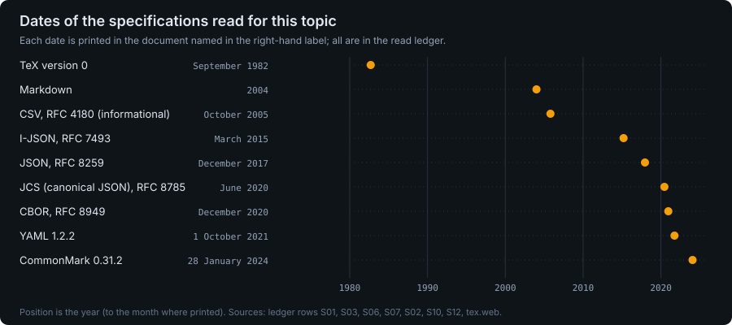
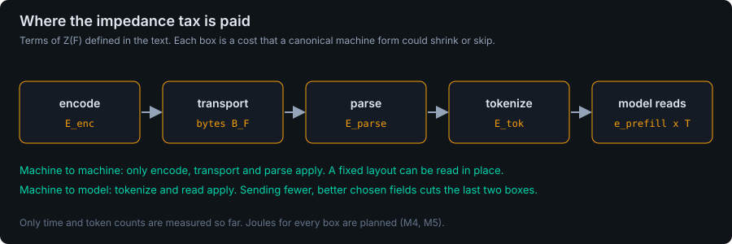
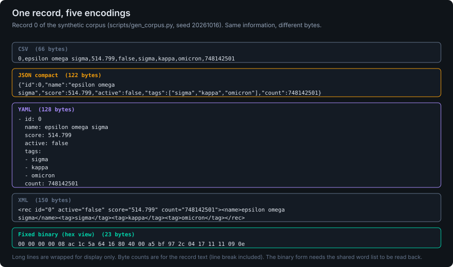
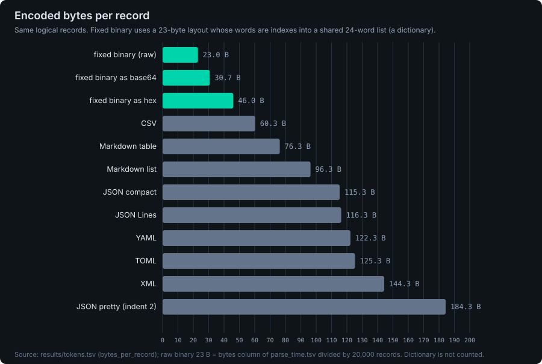
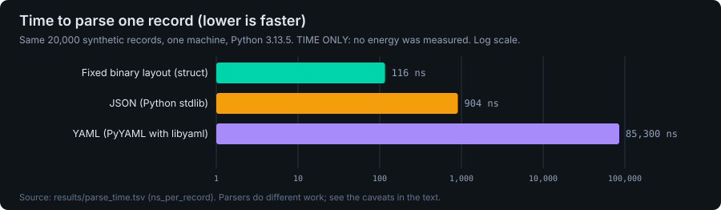
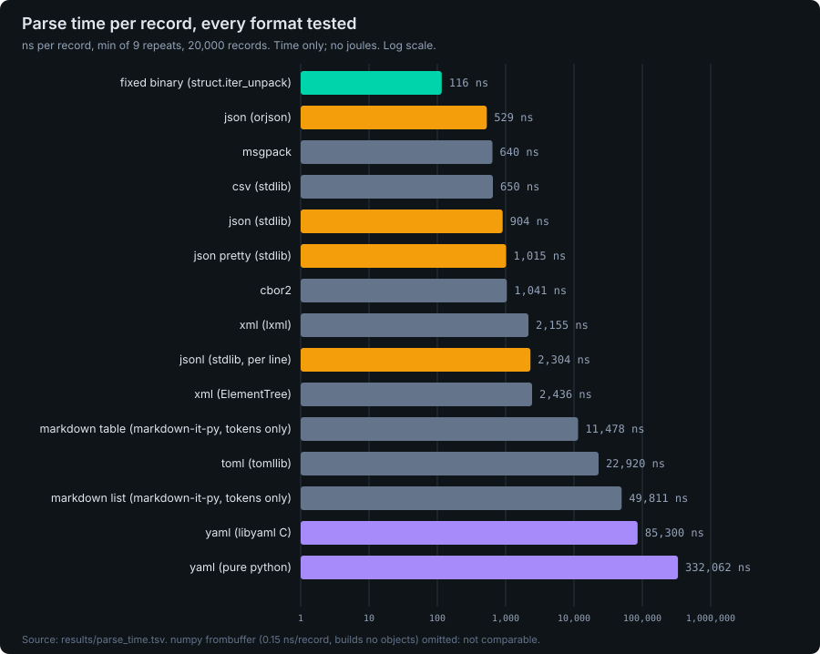
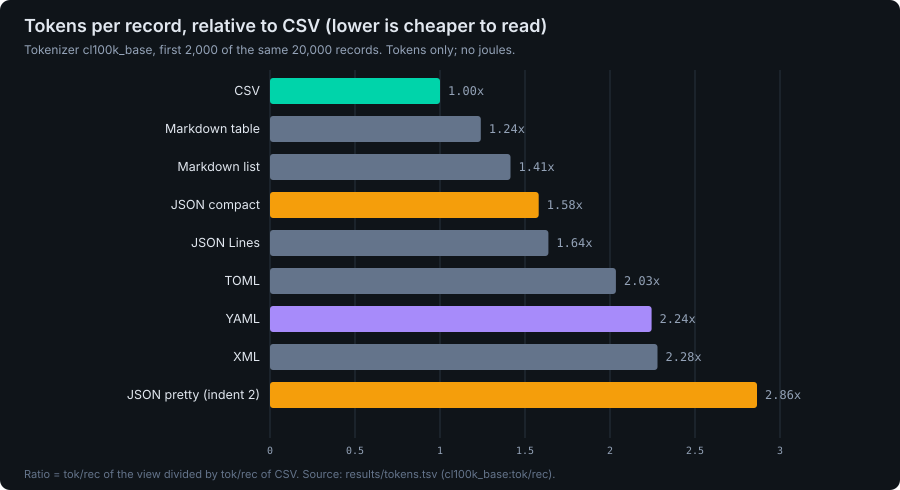
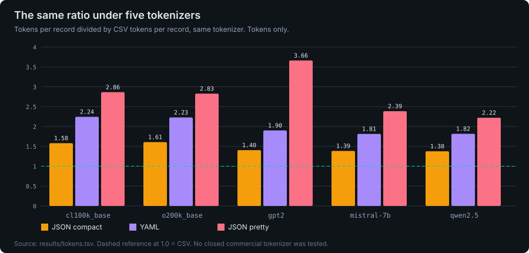

OpenIE Research · /living/ai-reads-human/ · interactive observatory
"AI" Reads Human: Format Impedance & reported_j Observatory
SHA-256 file digests, and exact BPE token counts across five open tokenizers;
Reported (reported_j: L3 & L2) for Apple M5 Max per-process kernel proc_pid_rusage(RUSAGE_INFO_V6).ri_energy_nj (L3, label D, 34 workloads × 5 shuffled replicates = 170 windows) paired with whole-SoC macmon IOReport (L2, label A2, where Falsifier 6 invalidated 109 / 170 windows due to > 5.0% shared-host idle drift); and
Scaled Projection for corpus-volume extrapolation. measured_j = None; board_metered = false; GPU prefill/decode joules remain planned (M4).
arh-diag-01 · 34-Workload Parse & Tokenize reported_j Explorer (Apple M5 Max, N = 20,000 Records)
Reported (L3 ri_energy_nj + L2 Falsifier 6)
Filter all 34 measured workloads (16 parsers + 9 cl100k_base + 9 o200k_base tiktoken runs) recorded in data/energy_reported_j.tsv, re-normalize energy and latency ratios against any reference format, and inspect Falsifier 6 co-tenant drift per workload.
| Stage | Workload / Format | Bytes (20k) | Tokens (20k) | Wall ms / 20k | L3 nJ / rec (±SD) | Energy Ratio | L2 Falsifier 6 |
|---|
arh-diag-02 · Exchange Pipeline Volume Calculator (Parse + Tokenize L3 reported_j)
Scaled from Measured L3 Coefficients
Scale record volume N to compare cumulative host CPU reported_j spent decoding between machines (fixed binary vs JSON vs YAML) or tokenizing for an LLM context window (CSV vs compact JSON vs pretty JSON). Does not include GPU prefill/decode joules (M4).
Reproducible Figures (Click Any Chart to Zoom)
Generated by scripts/make_charts.pyEvery SVG below is rebuilt directly from the TSV files in data/ and checked by scripts/verify_numbers.py.







cl100k_base.
cl100k_base, o200k_base, GPT-2, Mistral-7B, and Qwen2.5.Measured Data, Reproduction Scripts, Read Ledger & Format-Hazard Tests
Results (measured)
- energy_reported_j.tsv (34 workloads, M5 Max
L3+L2) - energy_reported_j_summary.json
- energy_joules.tsv (Oct 2026 unisolated L2 null run)
- ENV.txt
- SUMMARY.txt
- parse_time.tsv
- tokenize_time.tsv
- tokens.tsv
Scripts
- bench_parse.py
- bench_tokenize_time.py
- bench_tokens.py
- gen_corpus.py
- make_charts.py
- summarize.py
- verify_numbers.py
Read ledger
- READ_LEDGER.md: FULL / PARTIAL / UNAVAILABLE